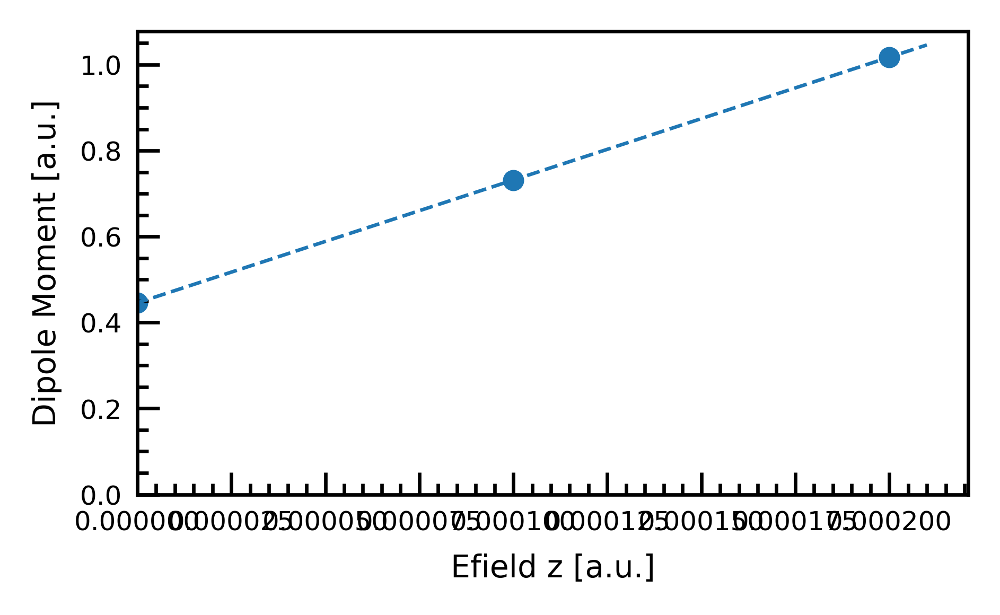

Workflow: Calculation of Dielectric Constant#
This workflow is under testing and not yet to be used
This workflow is powered by dpdispatcher
This workflow only uses CP2K
Usage#
eckits wkflow calc_diel -i input.yaml -m machine.yaml -r resources.yaml
Example: input.yaml for the calculation of global dielectric constant:
input_file: "template.inp" # the template file of cp2k input.
eps_type: "optical" # optical or static
scale: "global" # global or atomic
intensity_array: [0.0000, 0.0001, 0.0002] # List for global or Value for atomic
axis: "z" # the direction in which the electric field is applied
output_dir: "./output" # the directory/folder that saves the calculations and resutls
command: "srun cp2k.psmp -i input.inp" # command to run cp2k in
extra_forward_files: [
"anatase_bulk_relaxed.xyz" # extra files that are copied to calculation
]
extra_forward_common_files: [ # extra common files that are copied to calculation
]
restart_wfn: "restart.wfn" # the path of restart wavefunction for calculation
Example: input.yaml for the calculation of atomic dielectric constant:
input_file: "template.inp"
eps_type: "optical"
scale: "atomic"
intensity: 0.0001
axis: "z"
output_dir: "./output"
command: "srun cp2k.psmp -i input.inp"
extra_forward_files: [
"rutile_pristine_relaxed.xyz"
]
extra_forward_common_files: [
]
restart_wfn: "restart.wfn"
Example: machine.yaml:
batch_type: "Slurm"
context_type: "LocalContext"
local_root: "./"
remote_root: "./work_dir"
Example: resources.yaml:
cpu_per_node: 12
gpu_per_node: 1
number_node: 4
exclude_list: []
custom_flags:
- "#SBATCH --job-name='miniwkflow'"
- "#SBATCH --account='blabla'"
- "#SBATCH --mail-type=ALL"
- "#SBATCH --mail-user=blabla"
- "#SBATCH --constraint=gpu"
- "#SBATCH --cpus-per-task=1"
- "#SBATCH --time=24:00:00"
source_list: []
module_list:
- "daint-gpu"
- "CP2K"
envs:
OMP_NUM_THREADS: "$SLURM_CPUS_PER_TASK"
CRAY_CUDA_MPS: "1"
prepend_script:
- "ulimit -s unlimited"
time_limit: "24:00:00"
queue_name: "normal"
group_size: 1
Results#
Global Dielectric Constant#
The reuslted figure would be saved in output_dir/”dielectric_fitting.png” 
Atomic Dielectric Constant#
The reuslted figure would be saved in output_dir/”dielectric_profile.png”

Principle#
ECToolkits provides the workflow for calculating ab initio dielectric constant using CP2K.
For detail description, users are referred to this paper [Umari and Pasquarello, 2002] for the calculation of global dielectric constant, and this paper [Giustino and Pasquarello, 2005] for the calculation of atomic dielectric constant
Basically, we need to calculate dipole moments with varying electric fields. Then, fit the data to the following equation:
Bibliography#
Feliciano Giustino and Alfredo Pasquarello. Theory of atomic-scale dielectric permittivity at insulator interfaces. Physical Review B, 71(14):144104, 2005. doi:10.1103/physrevb.71.144104.
P. Umari and Alfredo Pasquarello. Ab initio Molecular Dynamics in a Finite Homogeneous Electric Field. Physical Review Letters, 89(15):157602, 2002. doi:10.1103/physrevlett.89.157602.